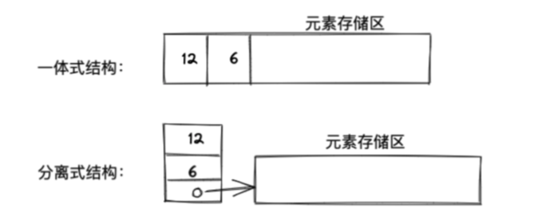

Python中的数据类型用法剖析
概念名词分析¶
相信大家在Python学习过程中，或多或少都听过序列类型、可变序列类型、不可变序列类型、容器类型、数值类型 等等这些名称概念，关于这些概念名词的理解，其实在笔者之前的日常使用中并没有太过纠结和刻意区分，一次偶然的心血来潮，决心好好盘一盘这些在日常使用中被提及多次的名词，下面聊一聊的个人的理解。
不同视角下的数据类型¶
序列类型（Sequence）：¶
想要弄清楚序列类型，首先得理解数据结构中序列的含义
- 什么是序列？：
- 概念：广义的理解，序列是一种数据存储格式，用来存储一系列的数据。
- 特点：数据在内存中存储是连续的。
- 什么是序列类型？
- 概念：序列通常是计算机编程领域对数据结构基本的抽象，不同语言基于序列都有着不同实现的更上一层的封装和抽象，在Python中对其抽象的类型就是序列类型。
- 特性：泛指那些数据结构具有索引、切片、加、乘、成员运算等操作。比如说：List、Tuple、String、Bytes、Array
- 序列类型分类：
- 根据序列是否可以被修改：
- 可变序列（MutableSequence）：List、Array
- 不可变序列（Sequence）：Tuple、String
- 根据序列中存储的是值还是引用：
- 扁平序列：内部存储的是值，通常有：String、Bytes
- 容器序列：内部存储的是引用，通常有：List、Tuple
- 根据序列是否可以被修改：
数值类型（Number）：¶
数值类型通常指的是：
- 数字类型：Int、Bool
- 浮点类型：Float
- 复合类型：Complex
容器类型(Container)：¶
此处的容器类型和上述说到的容器序列其实是不一样的， 这里的容器类型更多是从数据结构的功能特性进行分类，泛指那些专门用来装其他对象的特殊数据类型，比如：
- List（列表）、Tuple（元组）、Dict（字典）、Set（集合）
这也是后文主要介绍和分析的几种数据类型。
容器类型分析与实践¶
List VS Tuple¶
基本知识：¶
-
语法
-
共性
- 列表和元组都是一个可以放置任意数据类型（数字、字符串、对象、列表等）的有序集合。
- 类比：在其他编程语言，集合里元素的数据了类型通常都是一致的。
-
区别：
- 列表是动态的，长度大小不固定，可以对元素进行增加、删除、修改
- 元组是静态的，长度大小固定，无法对元素增加、删除、修改，如果想要添加元素需要重新申请内存新建元组
-
功能：
- 都支持索引、负数索引
- 都支持切片操作、支持多层嵌套
- 可以通过内置函数list()和tuple()相互转换
- 列表：支持查找、遍历、增加、修改、删除、统计、排序、反转、拷贝等操作
- 元组：支持查询（下标查询）、遍历、统计
实现原理¶
背景拓展： - 在程序中，经常需要将一组（通常是同为某个类型的）数据元素作为整体管理和使用，需要创建这种元素组，用变量记录它们，传进传出函数等。一组数据中包含的元素个数可能发生变化（可以增加或删除元素）。对于这种需求，最简单的解决方案便是将这样一组元素看成一个序列，用元素在序列里的位置和顺序，表示实际应用中的某种有意义的信息，或者表示数据之间的某种关系。 - 一组序列元素的组织形式，可以将其抽象为线性表
- 线性表介绍：
- 根据线性表的实现存储方式，可以分为两种实现模型：
- 顺序表：将元素顺序的存放在一块连续的存储块中，元素间的顺序关系由存储存储顺序自然表示。
- 链表：将元素存放在通过链接构造起来的一系列存储块中。
- 根据线性表的实现存储方式，可以分为两种实现模型：
- 顺序表介绍：
- 顺序表有两种实现方式:
- 一体式结构实现 ：一体式结构由于顺序表信息区域数据区连续存储在一起，想要更换数据区，只能整体搬迁，该顺序表对象改变了。
- 分离式结构实现：分离式结构想要更换数据区，只需要将表信息区中的数据区链接地址更新即可，该顺序表对象不变。
- 示意图：
- 
- 顺序表有两种实现方式:
- list实现原理：
- list采用的是一种分离式技术实现的动态顺序表。具体策略是，在建立空表（或者很小的表）时，系统分配一块能容纳8个元素（字节）的存储区，在执行插入操作（append、insert）时,如果元素存储区满了就换一块4倍大的存储区，但如果此时的表很大了（阀值：50000），则策略调整为采用加一倍的方法，避免出现过多空闲存储位置。
- 上述策略实现了动态扩容机制（over-allocating），保证了对象操作的高效性
- 增加、删除的时间复杂度均为O(1)
- tuple实现原理:
- 采用的一体式结构实现的顺序表。
- 实践：
使用obj.sizeof()进行查看空间分配的大小
-
性能PK
使用：python3 -m timeit "xxx" 测试执行时间
- 元组比列表更加轻量级，容器元素相同的情况下，元组性能速度要略优于列表
- 元素属于静态变量，Python默认会在后台对静态资源进行缓存，在下次创建相同大小的元组时，Python不会向操作系统发出请求去寻找内存，而是直接分配之间已经缓存的内存空间，因此程序运行的效率会大大提高。
-
实践：
应用场景¶
-
对于存储的数据和数量不变的场景，选择元组更加合适。
-
对于存储的数据和数量是可变的，选择列表更合适
常用函数¶
-
list:
- index()：返回指定数据所在位置的下标 。
- count()：统计指定数据在当前列表中出现的次数。
- len()：访问列表长度，即列表中数据的个数。
- in：判断指定数据在某个列表序列，如果在返回True，否则返回False
- not in：判断指定数据不在某个列表序列，如果不在返回True，否则返回False
- append()：列表结尾追加数据;如果append()追加的数据是一个序列，则追加整个序列到列表
- extend()：列表结尾追加数据，如果数据是一个序列，则将这个序列的数据逐一添加到列表。
- insert()：指定位置新增数据。
- pop()：删除指定下标的数据(默认为最后一个)，并返回该数据。
- remove()：移除列表中某个数据的第一个匹配项。
- clear()：清空列表
-
list.reverse()和list.sort()分别表示原地倒转列表和排序。
- 元组没有内置的这两个函数
-
reversed()和sorted()同样表示对列表/元组进行倒转和排序
- reversed()返回一个倒转后端的迭代器
- sorted()返回排好序的新列表
-
tuple:
- index()：查找某个数据，如果数据存在返回对应的下标，否则报错，语法和列表、字符串的index方法相同。
- count()：统计某个数据在当前元组出现的次数。
- len()：统计元组中数据的个数。
Dict VS Set¶
基本知识¶
- 语法
| Python | |
|---|---|
- 特点：
- Dict：
- 字典是一系列由键(key)和值(value)配对组成的元素的集合
- 在Python3.7+中，字典是有序的，之前是无序的
- 相对于列表和元素，字典的性能更优，特别是对于查找、添加、删除等操作，字典都能在O(1)时间复杂度内完成。
- Set:
- 集合与字典的唯一的区别是，集合没有键和值的配对，是一系列无序的、唯一的元素集合
- 通常被用来去重
- pop()在集合中慎用（因为集合无序，pop()默认删除的是最后一个元素）
- Dict：
- 共性：
- 字典和集合、key和value都可以是混合类型的
- 都支持增加、删除、更新等操作
- 都支持使用value in dict/set l来判断是否元素是否存在
- 字典和集合都是经过性能高度优化的数据结构，特别适合查找、添加、删除操作。
-
区别：
- 字典支持索引，集合不支持索引
-
用法实践
实现原理¶
- 原理
- Dict 和Set的内部结构都是一张hash表
- Dict:
- 字典的hash表存储了哈希值、键和值三个元素
- Set:
- 集合的hash表中只存储了单一元素
- 结构示意图
- 增删查操作分析
- 插入
- 每次向字典或集合插入一个元素时，Python 会首先计算键的哈希值（hash(key)），再和 mask = PyDicMinSize - 1 做与操作，计算这个元素应该插入哈希表的位置 index = hash(key) & mask。如果哈希表中此位置是空的，那么这个元素就会被插入其中。而如果此位置已被占用，Python 便会比较两个元素的哈希值和键是否相等。
- 若两者都相等，则表明这个元素已经存在，如果值不同，则更新值。
- 若两者中有一个不相等，这种情况我们通常称为哈希冲突（hash collision），意思是两个元素的键不相等，但是哈希值相等。这种情况下，Python 便会继续寻找表中空余的位置，直到找到位置为止。
- 查找
- 和插入操作类似，先根据哈希值找到其应该处于的为位置，再比较哈希表这个位置中元素的哈希值和键，看是否与需要查找的元素相等。相等直接返回，不相等，继续查找，直到空位或者抛出异常为止
- 删除
- 会暂时对这个位置的元素，赋予一个特殊的值，等到重新调整哈希表的大小时，再将其删除。
- 插入
- 什么是哈希冲突?
- 两个元素的键不相等，但哈希值相等的情况称为hash冲突。
- hash冲突的发生， 往往会降低字典或集合操作的速度。为了保证期高效性，字典和集合内的哈希表，通过会抱着闺女其至少留有⅓的剩余空间，随着元素的不停插入，当剩余空间小于⅓时，python会重新获取更到的内存空间，扩充hash表。
应用场景¶
- Dict：
- 使用 多个键值对，存储 描述一个物体 的相关信息
- 将多个字典放在一个列表中，然后遍历，对循环体中的每个字典都做同样的操作。
- 高效查询
- Set:
- 去重
- 高效查询
常用函数¶
- Dict:
- keys()
- values()
- items()
- del：删除字典或删除字典中指定键值对
- clear()：清空字典
- for in 遍历
- Set:
- add()
- update(), 追加的数据是序列
- remove()，删除集合中的指定数据，如果数据不存在则报错
- discard()，删除集合中的指定数据，如果数据不存在也不会报错
- pop()，随机删除集合中的某个数据，并返回这个数据。